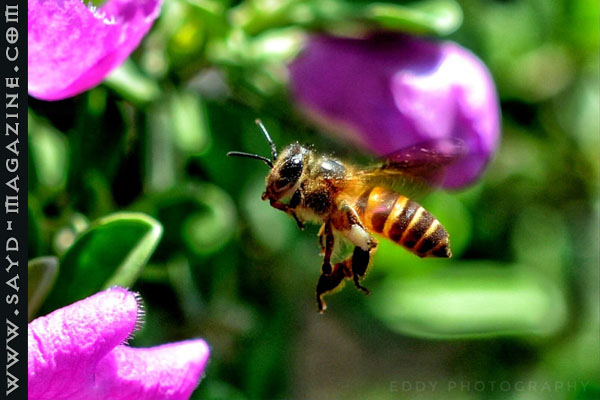
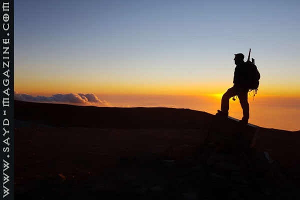
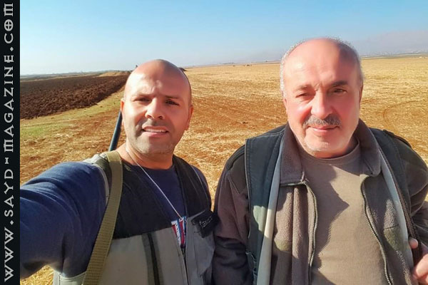
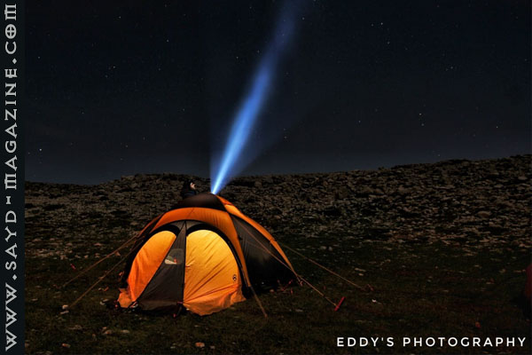
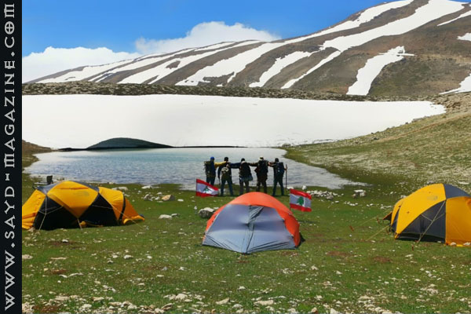
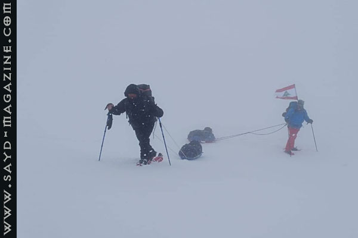
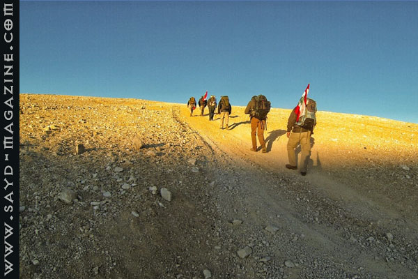
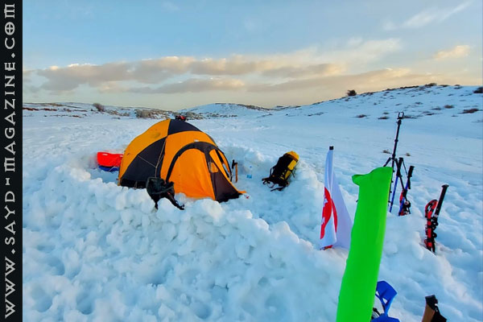
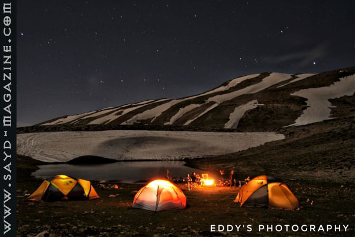

حين تذكر كلمة مغامرة لا يمكن ان تمرّ مرور الكرام امام اسم الصياد المصوّر المغامر اللبناني ايدي معلوف، بل عليك أن تتوقف لتتذوق طعم الوقت والطبيعة في قصصه وصوره وأحلامه التي تتسلق دون تعب نحو القمم.
فهذا الصياد العاشق للطبيعة المنسجم مع أخلاقيات الصيد ونبض المغامرة خير مثال على ان الصياد ليس مجرد بندقية وقنص طرائد بل نهج حياة متكامل، وهو حامي الطبيعة والدليل الخبير لكل عناصر جمالها.
كان لمجلة صيد معه هذه المقابلة .
حين تذكر كلمة مغامرة لا يمكن ان تمرّ مرور الكرام امام اسم الصياد المصوّر المغامر اللبناني ايدي معلوف، بل عليك أن تتوقف لتتذوق طعم الوقت والطبيعة في قصصه وصوره وأحلامه التي تتسلق دون تعب نحو القمم.
فهذا الصياد العاشق للطبيعة المنسجم مع أخلاقيات الصيد ونبض المغامرة خير مثال على ان الصياد ليس مجرد بندقية وقنص طرائد بل نهج حياة متكامل، وهو حامي الطبيعة والدليل الخبير لكل عناصر جمالها.
كان لمجلة صيد معه هذه المقابلة .


قال في المقابلة: الصيد والتصوير والمغامرة يجتمعون في مكان واحد وهو الطبيعة، ولا يمكن ان أفرق بينهم ابداً. اكتشفت حبي للتصوير حين كنت في الإمارات، وأول كاميرا اشتريتها كانت في عام 2001. أحب تصوير المناظر الطبيعية أكثر من تصوير الأشخاص، وأحب ايضاً التصوير بالأبيض والأسود. أهوى تجميع الصور القديمة والتاريخية، ولدي الكثير الكثير من الصور لضيعتي. أحب الصيد ببندقية الهواء PCP لأنها لا تسبب الضرر للطبيعة وتجمع أهم مزايا الصياد المحترف الدقة والتركيز والصبر. التخييم في الثلوج مغامرة واسعة تحتاج الى إرادة وتحضير ذهني ونفسي وتقني خصوصا في حين يكون هناك عاصفة. الأهم هو الشغف الكبير بالهواية، وعتاد التخييم هو شيء مكمّل. عالم العتاد عالم كبير جداً، ومهما أشتريت تظل تشعر ان هناك ما ينقصك. في 9 شباط 2020 أقمت وصديقي مخيماً في صنين على علو 2200 متر، وكنا اعتقدنا ان العاصفة قد أنتهت، ولكنها عادت بسرعة هواء 121 كلم في الساعة ولمدة 24 ساعة، وقد تدنت الحرارة حتى15 تحت الصفر، وكان الضباب سريعاً وكثيفاً، فأتخذنا قرار بعدم التحرك مطلقاً، ريثما يأتي صديقنا ليأخذنا في الية مجهزة للثلوج. دائما نكتسب خبرات جديدة، والأهم عدم الأنفعال والتهوّر وممارسة بطولات غبيّة قد تودي بحياتك. في أحد مشاوير الصيد صنعنا بيتاً من الثلج، وأصبح الناس يأتون بصحبة أولادهم، ليلتقطوا الصور قربه كأنه معلم سياحي، وآخرون بهدف التباهي في انهم هم من صنعوه. زوجتي تحب هوايتي وتشجّعني، لكنها تخاف عليّ من المغامرات المجنونة.. شاركت في مسابقة بناشيونال جيوغرافيك، حيث صوّرت نحلة تطير بدقة كبيرة، وقد إحتاج الأمر الى اربعة أيام، وطبعا صورة كهذه لا يمكن أن أكررها. 99 بالمئة من الصور لا تتكرر، حتى لو التقطها بنفس الطريقة ونفس الزمان والمكان. أحلم برحلة الى أفريقيا لمدة 20 يوم أصور بها حيوانات بريّة مفترسة، أو أن أكون مع بعثة ما في رحلة الى قمة إفرست للتصوير. مفتاح دخولي الى عالم الصيد وقدوتي هو والدي الصياد العاشق للطبيعة، وفي التخييم الصديق مكسيم شعيا الذي تعرفت عليه في عام 2005 وأخبرني الكثير عن عشقه لهذه الهواية وأثّر بي. أنا رياضي العب كرة سلة وكرة طاولة، وأمارس المشي والركض دائماً. يجب ان يكون لكل شخص فينا هواية مثيرة وجديدة ويجد الوقت لها، ليستمع في الحياة، وليس هناك مغامرة بلا خطر، لكن على الإنسان أن يمارس هوايته بذكاء دون تهوّر.














